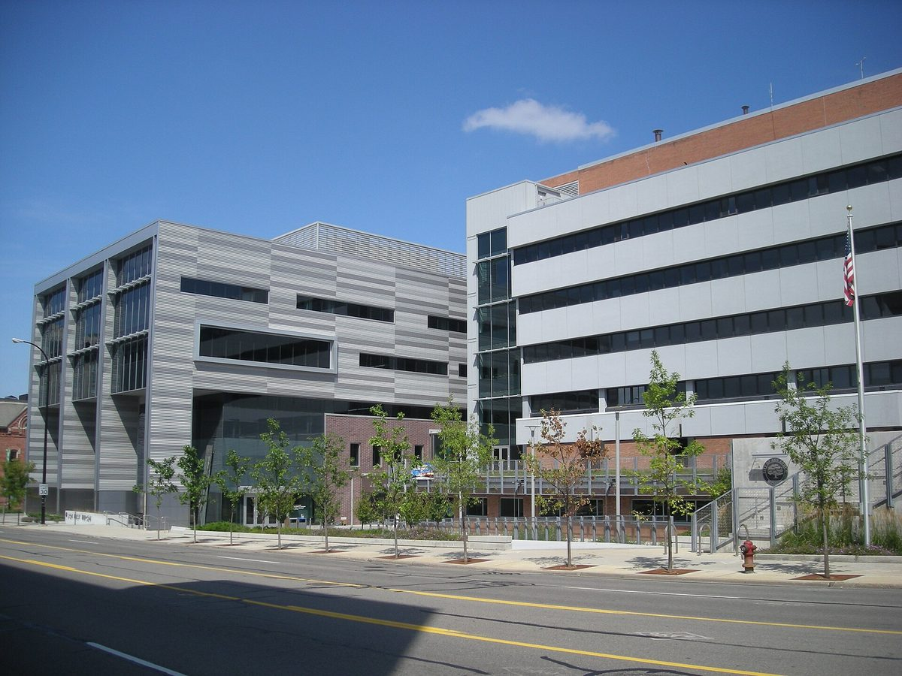

미국 앤아버시, 시민단체의 '공공전력' 주민투표안에 투표 8일 앞두고 무효 확인 소송…주 법무장관실은 "헌장 수정으로 볼 수 있다"

시의회 10 대 1 결의 따라 69쪽 소장 내…시는 "헌장 개정 절차 안 밟았다", 시민단체는 "막판 선거 결과 바꾸기" 반발, 판결·심리 일정은 아직 없어
미국 미시간주 앤아버시가 11월 3일 주민투표에 오르는 시영 전력회사 설립안 '제안 E'를 두고, 이 안을 낸 시민단체 '앤아버 공공전력(Ann Arbor for Public Power)'을 상대로 제안의 무효를 확인해 달라는 소송을 냈다. 이달 초 시의회가 10 대 1로 시 변호사실에 제안 E의 적법성을 다투라고 지시한 데 따라, 시 변호사 4명과 외부 로펌 다이케마(Dykema) 변호사 2명으로 꾸린 시 법무팀이 10월 26일 와시트노 카운티 순회법원에 69쪽 분량의 소장을 냈고, 사건은 패트릭 콘린 판사에게 배당됐다. 시는 제안 E가 겉으로는 시영 전력회사 설립에 한정된 듯하지만 시 정부의 한 부문이 오래 가져온 권한을 새 시영 전력회사 위원회로 옮겨 시의 운영과 통치 구조를 크게 바꾸므로 단순한 헌장 '수정'이 아니라 헌장 '개정'에 해당하는데도 그 절차를 밟지 않았다고 주장하며, 선거 전이든 뒤든 법원이 제안을 '불법이며 효력 없음'으로 선언해 달라고 요청했다. 반면 주 법무장관실은 8월 12일 주지사에게 보낸 서한에서 이 제안을 홈룰 시법(Home Rule City Act)에 맞는 헌장 수정으로 보고, 그만한 권한을 가진 위원회를 세운다고 해서 헌장 개정이 필요한지는 분명하지 않다는 결론을 냈으며, 시와 시민단체 모두 이 서한을 근거로 들고 있다. 제안 E가 통과되면 시가 장차 DTE 에너지의 지역 설비를 넘겨받아 지역 전력 공급자가 되는 길의 첫걸음이 된다. 브라이언 가이링어 앤아버 공공전력 사무국장은 소송 소식에 "우리가 이기고 있나 봅니다"라고 말하며 막판에 선거 결과를 바꾸려는 시도이자 세금 낭비라고 비판했고, 아틀린 카우르 시 변호사는 더 할 말이 없다고 밝혔으며, 소송은 판결이나 심리 일정이 나오지 않은 제기 단계다.
시민에너지 관점
시의회는 10 대 1로 소송을 결의하고 주 법무장관실은 적법한 헌장 수정으로 본 이번 다툼은, 지역 전력망의 주인을 주민이 직접 정할 수 있느냐는 물음이 결국 권한 다툼으로 법정까지 간다는 것을 보여 준다. 시민이 전력회사를 맡을 역량이 있느냐는 우려가 나올 수 있지만, 독일 함부르크에서는 2013년 주민투표에서 50.9%가 에너지망을 공공 소유로 되돌리자는 안에 찬성했고, 시는 그 결정에 따라 전력망부터 차례로 되사들였다. 주민이 직접 정한 소유 구조라야 요금과 투자 방향을 둘러싼 갈등도 주민 앞에서 풀 수 있고, 전력망에서 나는 이익도 지역에 남는다. 우리 지자체도 시민 주도 에너지 사업의 권한과 역할을 조례와 협약으로 미리 정해, 주민의 결정이 뒤늦은 소송으로 흔들리지 않게 해야 한다.
출처: MLive.com 2026-10-28 Ryan Stanton 원문 보기
米アナーバー市、市民団体の「公共電力」住民投票案に投票8日前に無効確認訴訟…州司法長官室は「憲章の修正とみなせる」
市議会10対1の決議を受け69ページの訴状…市は「憲章改定の手続きを踏んでいない」、市民団体は「土壇場で選挙結果を変える試み」と反発、判決・審理日程はまだない
米ミシガン州アナーバー市は、11月3日の住民投票にかけられる市営電力会社設立案「提案E」をめぐり、この案を出した市民団体「アナーバー・フォー・パブリック・パワー（Ann Arbor for Public Power）」を相手取り、提案の無効確認を求める訴訟を起こした。今月初めに市議会が10対1で市法務室に提案Eの適法性を争うよう指示したことを受け、市の弁護士4人と外部法律事務所ダイケマ（Dykema）の弁護士2人からなる市の法務チームが10月26日、ウォッシュトノー郡巡回裁判所に69ページの訴状を提出し、事件はパトリック・コンリン判事に割り当てられた。市は、提案Eは表向き市営電力会社の設立に限られているように見えるが、市政府の一部門が長く持ってきた権限を新たな市営電力委員会に移して市の運営と統治の仕組みを大きく変えるため、単なる憲章の「修正」ではなく憲章の「改定」にあたるのに、その手続きを踏んでいないと主張し、選挙の前後を問わず裁判所が提案を「違法かつ無効」と宣言するよう求めた。一方、州司法長官室は8月12日に州知事へ送った書簡で、この提案をホームルール市法（Home Rule City Act）に沿った憲章の修正とみなし、その程度の権限を持つ委員会を設けることで憲章の改定が必要になるかは明らかでないと結論づけており、市と市民団体の双方がこの書簡を根拠に挙げている。提案Eが可決されれば、市が将来DTEエナジーの地域設備を引き継いで地域の電力供給者になる道の第一歩となる。アナーバー・フォー・パブリック・パワーのブライアン・ガイリンガー事務局長は訴訟の知らせに「私たちが勝っているということでしょう」と述べ、土壇場で選挙結果を変えようとする試みで税金の無駄遣いだと批判し、アトリーン・カウル市弁護士はこれ以上のコメントはないとしており、訴訟は判決や審理日程が出ていない提起の段階にある。
市民エネルギーの視点
市議会は10対1で訴訟を決議し、州司法長官室は適法な憲章の修正とみた今回の争いは、地域の電力網の持ち主を住民が直接決められるのかという問いが、結局は権限争いとして法廷にまで持ち込まれることを示している。市民に電力会社を担う力があるのかという懸念もありうるが、ドイツのハンブルクでは2013年の住民投票で50.9%がエネルギー網を公共の所有に戻す案に賛成し、市はその決定に従って電力網から順に買い戻した。住民が自ら決めた所有の形であってこそ、料金や投資の方向をめぐる対立も住民の前で解くことができ、電力網から生まれる利益も地域に残る。韓国の自治体も、市民主導のエネルギー事業の権限と役割を条例と協約であらかじめ定め、住民の決定が後からの訴訟で揺らがないようにすべきだ。
出典: MLive.com 2026-10-28 Ryan Stanton 原文を読む
美国安娜堡市在投票前8天起诉市民团体"公共电力"公投提案要求确认无效…州总检察长办公室认为"可视为宪章修正"
依据市议会10比1决议提交69页诉状…市方称"未走宪章修订程序"，市民团体批评"临门一脚改变选举结果"，尚无判决或审理日程
美国密歇根州安娜堡市就将于11月3日付诸公投的市营电力公司设立案"E号提案"，对提出该案的市民团体"安娜堡公共电力"（Ann Arbor for Public Power）提起诉讼，请求确认提案无效。本月初市议会以10比1指示市检察官办公室挑战E号提案的合法性，据此，由4名市府律师和外部律师事务所戴克玛（Dykema）2名律师组成的市法务团队于10月26日向沃什特诺县巡回法院递交了69页诉状，案件分配给帕特里克·康林法官。市方主张，E号提案表面上仅限于设立市营电力公司，实际上却把市政府一个部门长期拥有的权力转移给新的市营电力委员会，大幅改变市的运作和治理结构，因此不是单纯的宪章"修正"，而属于宪章"修订"，却没有走相应程序，请求法院无论在选举前后都宣布该提案"违法且无效"。另一方面，州总检察长办公室在8月12日致州长的信中，认为该提案是符合《地方自治城市法》（Home Rule City Act）的宪章修正，并得出结论称，设立拥有这种程度权力的委员会是否需要修订宪章并不明确，市方和市民团体都援引了这封信作为依据。E号提案若获通过，将成为市政府将来接手DTE能源公司本地设施、成为本地电力供应者的第一步。安娜堡公共电力执行主任布莱恩·盖林格得知诉讼后说"看来我们正在赢"，批评这是临门一脚改变选举结果的企图，也是浪费纳税人的钱；市检察官阿特琳·考尔表示没有更多评论。该诉讼仍处于刚提起的阶段，尚无判决或审理日程。
市民能源视角
市议会以10比1决议起诉，州总检察长办公室却认为是合法的宪章修正，这场争执说明，居民能否直接决定本地电网归谁所有的问题，最终会演变成权限之争闹上法庭。也许有人担心市民是否有能力经营电力公司，但在德国汉堡，2013年公投中有50.9%的选民赞成把能源网收归公有，市政府依照这一决定从电网开始陆续回购。只有居民亲自决定的所有权结构，才能让围绕电价和投资方向的矛盾在居民面前化解，电网产生的收益也才能留在当地。韩国地方政府也应通过条例和协议事先明确市民主导能源事业的权限与角色，让居民的决定不会因事后诉讼而动摇。
来源: MLive.com 2026-10-28 Ryan Stanton 查看原文
Ann Arbor sues to void citizens' 'public power' ballot proposal eight days before the vote; state attorney general's office has called it a charter amendment
City files 69-page complaint after 10-1 council vote, arguing the measure is a charter revision made without the required procedure; campaigners call it a last-minute attempt to change an election, and no ruling or hearing date has been set
The city of Ann Arbor, Michigan, has sued the grassroots group Ann Arbor for Public Power, asking a court to declare void Proposal E, the group's plan to create a city-run electric utility, which goes before voters on 3 November. Following a 10-1 City Council vote earlier this month directing the city attorney's office to challenge the measure, a city legal team of four city attorneys and two outside lawyers from the Dykema law firm filed a 69-page complaint in Washtenaw County Circuit Court on 26 October, and the case has been assigned to Judge Patrick Conlin. The city argues that although Proposal E appears limited to forming a municipal utility, it would shift powers long held by one branch of city government to a new municipal electric utility board and fundamentally change how the city is run, making it a charter "revision" rather than a mere "amendment" — a process the group did not follow — and it asks the court to declare the proposal "illegal and of no effect" before or after the election. The state attorney general's office, however, concluded in a 12 August letter to the governor that the measure is a charter amendment consistent with the Home Rule City Act and that it is not clear a board with the authority described would require a charter revision; both the city and the group cite that letter. If passed, Proposal E would be a first step toward the city potentially taking over DTE Energy's local assets and becoming the community's electricity provider. Brian Geiringer, executive director of Ann Arbor for Public Power, responded to the lawsuit by saying "We must be winning," calling it a last-minute attempt to change the outcome of an election and a waste of taxpayer money, while City Attorney Atleen Kaur declined further comment; the case is at the filing stage, with no ruling or hearing schedule announced.
Citizen Energy View
A council that voted 10-1 to sue, set against a state attorney general's office that sees a lawful charter amendment, shows that the question of whether residents can decide for themselves who owns their local grid ends up in court as a fight over powers. Some may doubt whether citizens can run a utility, but in Hamburg, Germany, 50.9% of voters backed returning the energy grids to public ownership in a 2013 referendum, and the city went on to buy them back, starting with the electricity grid. Only an ownership model chosen by residents themselves allows disputes over tariffs and investment to be settled in front of residents, and keeps the value of the grid in the community. Local governments in Korea should likewise set out the powers and roles of citizen-led energy projects in ordinances and agreements in advance, so that residents' decisions are not unsettled by belated lawsuits.
Source: MLive.com 2026-10-28 Ryan Stanton Read the original